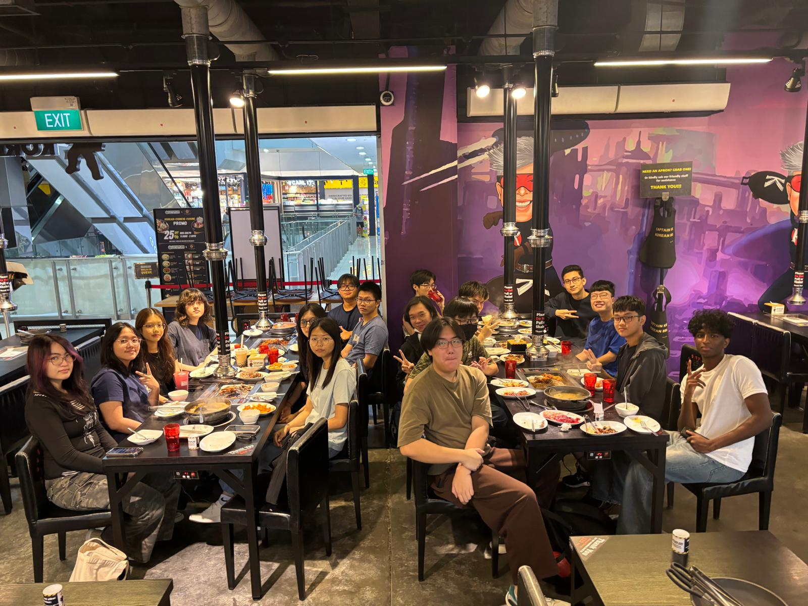
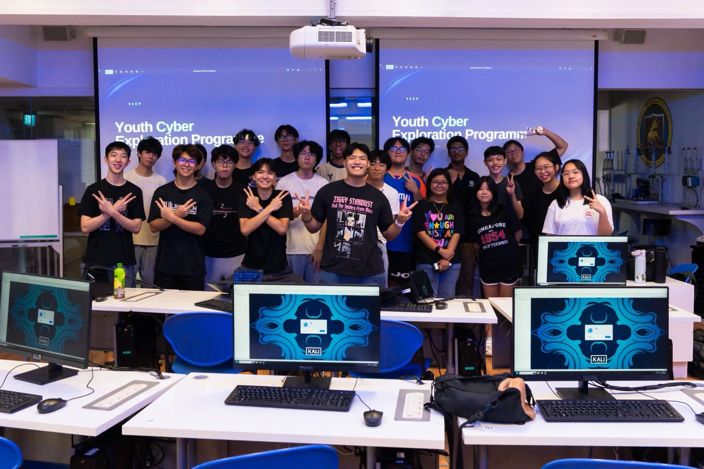

Student leadership, shared experiences, and the communities I contribute to.
03 Beyond the code
Showing up. Taking part.
Learning also happens through people, communities, and new experiences.
01 / Leadership

A voice for my classmates.
As Deputy Class Representative, I share academic updates and help coordinate class matters. As an orientation group leader, I helped organise activities and led a group of 17 freshmen.
Singapore Polytechnic · AY2026/2702 / Technical community

Learning with others.
I create event posts for the Gryphons publicity subcommittee and prepared the Burp Suite segment of the CyberBlitz Web Exploitation Workshop. My team reached the semi-finals of the SP PolyFinTech100 API Hackathon.
From judging the Robo Mission Elementary category at the World Robot Olympiad Singapore Nationals to volunteering at Celebrate Christmas in Singapore, I enjoy helping events and communities run well.
Competition support & community service
More club & community involvement
Community & events
International Students’ Club — Senior Committee Member, Community Enrichment Program, AY2025/26
SP Freshmen Orientation Programme — Organising Member & Group Leader, AY2026/27
ASEAN Spark 2025 — Organising Member
Celebrate Christmas in Singapore — four days of community service
Hackathons & recognition
SP PolyFinTech100 API Hackathon — Semi-Finalist, AY2026/27
SFYC Innovators Bootcamp — co-developed and pitched SyfeBot, a chatbot-led investing concept
SP x Autodesk Singapore Hackathon — Participant
Singapore Polytechnic CCA Grade: Gold
04 Moments together
Life beyond the classroom.
A few memories from volunteering, student events, and hackathons.